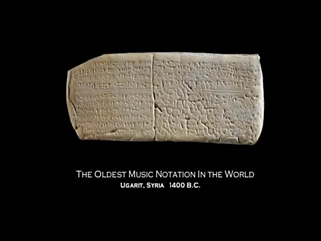

|
|
||||
Weilin's MUSIC WORLD! |
||||
The Timeline of the Music History |
||||
| 1.Hurrian Hymn To Nikkal |  | 1400 BCE - Syria | ||
| The Hurrian Hymn to Nikkal is more than 3,400 years old .These ancient clay tablets are the oldest surviving work of notated music in the world. Discovered in Ugarit, Syria, in the early 1950's, specialists took decades to decipher the melody from the tablets. | The cuneiform music notation shows heptatonic diatonic scales and the melody was played on a nine-stringed lyre, using a tuning method described on other Akkadian tablets and inherited from the old Babylonian period. | |||
| 2.Prelude in C Major | ||||
| 1722 - Johann Sebastian Bach | The Prelude in C Major (or BWV 846) is the first composition in the Well-Tempered Clavier. It is a 35 bars long piece with harmonic variations on broken chords, a simple but beautiful piece that prefigures modern music. |
|
||